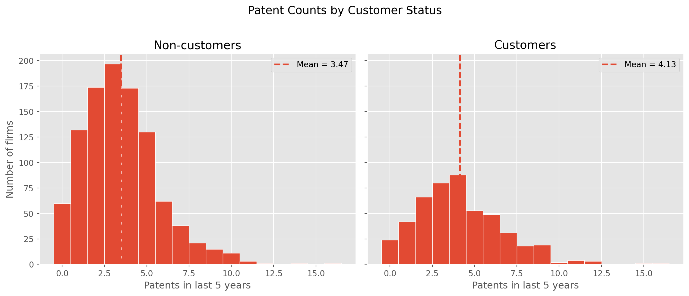
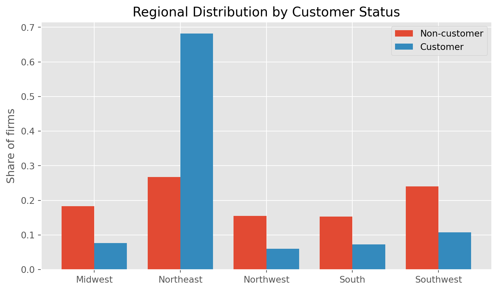
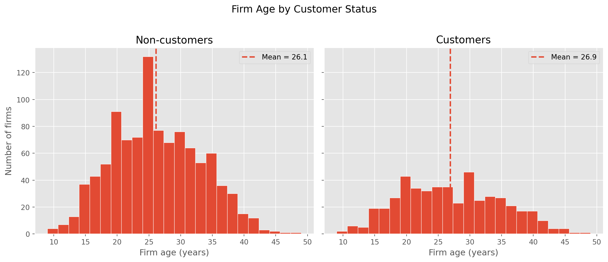
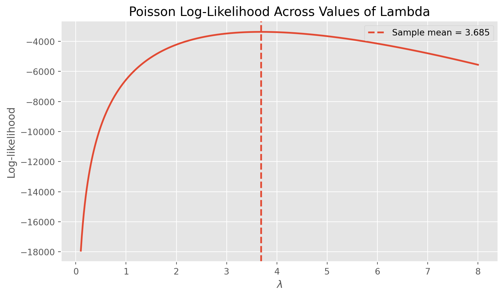
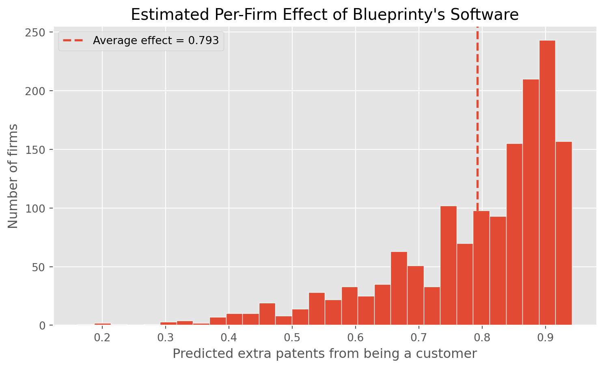

df = pd.read_csv("data/blueprinty.csv")
df["iscustomer"] = df["iscustomer"].astype(int)
df.head()| patents | region | age | iscustomer | |
|---|---|---|---|---|
| 0 | 0 | Midwest | 32.5 | 0 |
| 1 | 3 | Southwest | 37.5 | 0 |
| 2 | 4 | Northwest | 27.0 | 1 |
| 3 | 3 | Northeast | 24.5 | 0 |
| 4 | 3 | Southwest | 37.0 | 0 |
A Case Study of Blueprinty’s Software and Patent Awards
Zhuojin Li
May 16, 2026
Blueprinty is a small software company that sells a specialized tool for engineering firms. Its software helps these firms draft the technical blueprints that accompany patent applications submitted to the United States Patent and Trademark Office. Like any vendor, Blueprinty would love to be able to tell prospective clients a simple, persuasive story: firms that use our software get more patents approved.
The cleanest way to support that claim would be to observe the same firms before and after adopting the software and watch their approval rates change. That experiment was never run, and no such longitudinal data exists. What Blueprinty does have is a cross-section of 1,500 mature (non-startup) engineering firms. For each firm we observe the number of patents awarded over the last five years, the region in which the firm operates, the firm’s age since incorporation, and whether the firm is a Blueprinty customer.
The trouble is that Blueprinty’s customers were not chosen at random. Firms decide for themselves whether to buy the software, and that decision is likely correlated with other things that also affect patent output — how established a firm is, where it is located, how aggressively it files. If customers happen to be older or concentrated in patent-heavy regions, a raw comparison of patent counts would credit the software for differences it did not cause. The rest of this post builds up a model that lets us compare customers and non-customers while holding firm age and region fixed, so that the customer effect is isolated as cleanly as observational data allows.
| patents | region | age | iscustomer | |
|---|---|---|---|---|
| 0 | 0 | Midwest | 32.5 | 0 |
| 1 | 3 | Southwest | 37.5 | 0 |
| 2 | 4 | Northwest | 27.0 | 1 |
| 3 | 3 | Northeast | 24.5 | 0 |
| 4 | 3 | Southwest | 37.0 | 0 |
means = (
df.groupby("iscustomer")["patents"]
.agg(["count", "mean"])
.reset_index()
)
means["iscustomer"] = means["iscustomer"].map({0: "Non-customer", 1: "Customer"})
means.columns = ["Group", "Number of firms", "Mean patents (5 yrs)"]
show(means, {"Mean patents (5 yrs)": "{:.2f}"},
"Average patents over 5 years, by customer status")| Group | Number of firms | Mean patents (5 yrs) |
|---|---|---|
| Non-customer | 1019 | 3.47 |
| Customer | 481 | 4.13 |

Both distributions have the right-skewed shape typical of count data: most firms sit at a handful of patents and a long tail stretches out to the right. The customer distribution, however, is visibly shifted toward higher counts. On average, customers were awarded about 4.1 patents over five years compared with roughly 3.5 for non-customers. Taken at face value this looks like a point for the marketing team — but a raw mean difference is exactly the comparison that selection bias can distort, so we need to look at how the two groups differ on everything else.
region_ct = pd.crosstab(df["region"], df["iscustomer"], normalize="columns") * 100
region_ct.columns = ["Non-customer (%)", "Customer (%)"]
region_ct = region_ct.reset_index().rename(columns={"region": "Region"})
show(region_ct, {"Non-customer (%)": "{:.1f}", "Customer (%)": "{:.1f}"},
"Regional composition within each group (column percentages)")| Region | Non-customer (%) | Customer (%) |
|---|---|---|
| Midwest | 18.4 | 7.7 |
| Northeast | 26.8 | 68.2 |
| Northwest | 15.5 | 6.0 |
| South | 15.3 | 7.3 |
| Southwest | 24.0 | 10.8 |

The regional breakdown makes the selection problem concrete. Customers are heavily concentrated in the Northeast, while non-customers are spread far more evenly across the Midwest, Northwest, South, and Southwest. If the Northeast is a more patent-active region for reasons unrelated to Blueprinty, then some of the raw customer advantage is really a regional advantage in disguise.
age_tab = (
df.groupby("iscustomer")["age"]
.agg(["mean", "median", "std"])
.reset_index()
)
age_tab["iscustomer"] = age_tab["iscustomer"].map({0: "Non-customer", 1: "Customer"})
age_tab.columns = ["Group", "Mean age", "Median age", "Std. dev."]
show(age_tab, {"Mean age": "{:.1f}", "Median age": "{:.1f}", "Std. dev.": "{:.1f}"},
"Firm age (years since incorporation) by customer status")| Group | Mean age | Median age | Std. dev. |
|---|---|---|---|
| Non-customer | 26.1 | 25.5 | 6.9 |
| Customer | 26.9 | 26.5 | 7.8 |

Firm age tells a similar story. Customers are, on average, a little older than non-customers. Older firms have had more time to build patenting capacity and refine their application process, so age is plausibly a driver of patent counts in its own right. Because customers differ from non-customers on both age and region, and because both of those variables are themselves linked to patenting, any honest evaluation of the software has to control for them. That is precisely what the Poisson regression in the following sections is designed to do.
The outcome we care about — patents awarded over five years — is a count. It cannot be negative and it cannot take fractional values like 2.7. A Normal distribution, which is continuous and unbounded in both directions, is a poor description of such data. The natural starting point for non-negative integer outcomes is the Poisson distribution, which places all of its probability mass on \(0, 1, 2, \dots\) and is fully described by a single rate parameter \(\lambda\) equal to both its mean and its variance.
Suppose each firm’s patent count is an independent draw \(Y_i \sim \text{Poisson}(\lambda)\) with probability mass function
\[ f(Y_i \mid \lambda) = \frac{e^{-\lambda}\lambda^{Y_i}}{Y_i!}. \]
Because the firms are assumed independent and identically distributed, the joint likelihood of the whole sample is the product of the individual densities:
\[ L(\lambda) = \prod_{i=1}^{n} \frac{e^{-\lambda}\lambda^{Y_i}}{Y_i!} = \frac{e^{-n\lambda}\,\lambda^{\sum_i Y_i}}{\prod_i Y_i!}. \]
Products of many small numbers are awkward to maximize, so we take logs. The log-likelihood turns the product into a sum:
\[ \ell(\lambda) = \sum_{i=1}^{n} \Big[ -\lambda + Y_i \log \lambda - \log(Y_i!) \Big] = -n\lambda + \log(\lambda)\sum_{i=1}^{n} Y_i - \sum_{i=1}^{n}\log(Y_i!). \]
The last term does not involve \(\lambda\), so it does not affect where the maximum is — only the height of the curve.
Using the observed patent counts as \(Y\), we can sweep \(\lambda\) across a grid and plot the resulting log-likelihood.

The curve is smooth, single-peaked, and concave. Reading the MLE off the plot is just a matter of finding the value of \(\lambda\) at the very top of the hill and dropping straight down to the horizontal axis — that location is the value of \(\lambda\) that makes the observed data most probable. The dashed line marks the sample mean, and the peak sits right on top of it.
We can confirm that algebraically. Differentiate the log-likelihood with respect to \(\lambda\):
\[ \frac{d\ell}{d\lambda} = -n + \frac{1}{\lambda}\sum_{i=1}^{n} Y_i. \]
Setting the derivative to zero and solving:
\[ -n + \frac{\sum_i Y_i}{\lambda} = 0 \quad\Longrightarrow\quad \hat{\lambda}_{\text{MLE}} = \frac{1}{n}\sum_{i=1}^{n} Y_i = \bar{Y}. \]
This “feels right”: the Poisson distribution’s mean is \(\lambda\), so the best single-number guess for the rate is simply the average count we observed.
To check the algebra, we maximize the log-likelihood numerically by minimizing its negative.
neg_ll = lambda l: -poisson_loglikelihood(l[0], Y)
res = optimize.minimize(neg_ll, x0=[1.0], method="Nelder-Mead")
compare = pd.DataFrame({
"Method": ["Numerical MLE (optimizer)", "Sample mean (closed form)"],
"Estimate of lambda": [res.x[0], Y.mean()]
})
show(compare, {"Estimate of lambda": "{:.4f}"},
"Numerical vs. closed-form MLE")| Method | Estimate of lambda |
|---|---|
| Numerical MLE (optimizer) | 3.6847 |
| Sample mean (closed form) | 3.6847 |
The two numbers agree to several decimal places. They should: the optimizer is searching for the top of exactly the same concave curve we differentiated by hand, and that peak is the sample mean. Any tiny discrepancy is just the optimizer’s convergence tolerance, not a real disagreement.
A single \(\lambda\) for every firm is too blunt. We saw that customers differ from non-customers in age and region, and those variables plausibly affect patenting on their own. The fix is to let each firm have its own rate parameter that depends on its characteristics:
\[ Y_i \sim \text{Poisson}(\lambda_i) \qquad \text{where} \qquad \lambda_i = \exp(X_i'\beta). \]
Why the exponential? The rate \(\lambda_i\) must be strictly positive — a negative expected patent count is meaningless. But the linear index \(X_i'\beta\) can be any real number, positive or negative, depending on the covariates and coefficients. Wrapping it in \(\exp(\cdot)\) maps the whole real line onto the positive reals, guaranteeing a valid rate for every possible combination of inputs. It also makes the model multiplicative: a one-unit change in a covariate scales \(\lambda_i\) by a constant factor rather than adding a constant amount.
Substituting \(\lambda_i = \exp(X_i'\beta)\) into the Poisson log-likelihood gives a function of the coefficient vector \(\beta\):
\[ \ell(\beta) = \sum_{i=1}^{n} \Big[ -e^{X_i'\beta} + Y_i (X_i'\beta) - \log(Y_i!) \Big]. \]
def poisson_regression_loglikelihood(beta, Y, X):
eta = np.clip(X @ beta, -30, 30) # clip to avoid overflow in exp
lam = np.exp(eta)
return np.sum(-lam + Y * eta - gammaln(Y + 1))
def neg_loglik(beta, Y, X):
return -poisson_regression_loglikelihood(beta, Y, X)
def neg_score(beta, Y, X):
# gradient of the negative log-likelihood: X'(lambda - Y)
lam = np.exp(np.clip(X @ beta, -30, 30))
return X.T @ (lam - Y)The covariate matrix begins with a column of 1’s for the intercept, then firm age, then age squared, then binary indicators for the regions, and finally the customer indicator.
Two modeling choices deserve a word of explanation. First, age squared: the relationship between a firm’s age and its patent output is unlikely to be a straight line forever. Very young firms are still ramping up, and very old firms may plateau or decline; a quadratic term lets the model bend to capture that curvature instead of forcing a strictly linear trend. Second, we drop one region indicator. With an intercept already in the model, including a dummy for every region would make the region columns sum to the intercept column — perfect collinearity, which leaves the coefficients unidentified. Dropping one region (here, the Midwest) makes it the baseline; every other region’s coefficient is then read relative to the Midwest.
reg_dummies = pd.get_dummies(df["region"], prefix="region", drop_first=False)
reg_dummies = reg_dummies.drop(columns=["region_Midwest"]).astype(float)
X_df = pd.concat(
[
pd.Series(1.0, index=df.index, name="intercept"),
df["age"].astype(float),
(df["age"] ** 2).rename("age_sq").astype(float),
reg_dummies,
df["iscustomer"].astype(float),
],
axis=1,
)
X = X_df.values
Y = df["patents"].values.astype(float)
col_names = list(X_df.columns)
col_names['intercept',
'age',
'age_sq',
'region_Northeast',
'region_Northwest',
'region_South',
'region_Southwest',
'iscustomer']We minimize the negative log-likelihood with the analytic gradient (which makes the optimizer fast and stable even with the large age_sq column), then build standard errors from the Hessian. The covariance matrix of the estimates is the inverse of the negative Hessian of the log-likelihood; the standard errors are the square roots of its diagonal.
beta0 = np.zeros(X.shape[1])
fit = optimize.minimize(
neg_loglik, beta0, args=(Y, X),
jac=neg_score, method="BFGS"
)
beta_hat = fit.x
# Hessian of the negative log-likelihood for Poisson regression: X' diag(lambda) X
lam_hat = np.exp(np.clip(X @ beta_hat, -30, 30))
hessian = X.T @ (X * lam_hat[:, None])
cov = np.linalg.inv(hessian)
se = np.sqrt(np.diag(cov))
mle_table = pd.DataFrame({
"Coefficient": col_names,
"Estimate": beta_hat,
"Std. error": se,
})
show(mle_table, {"Estimate": "{:.4f}", "Std. error": "{:.4f}"},
"Poisson regression MLE (custom optimizer + Hessian-based SEs)")| Coefficient | Estimate | Std. error |
|---|---|---|
| intercept | -0.5089 | 0.1832 |
| age | 0.1486 | 0.0139 |
| age_sq | -0.0030 | 0.0003 |
| region_Northeast | 0.0292 | 0.0436 |
| region_Northwest | -0.0176 | 0.0538 |
| region_South | 0.0566 | 0.0527 |
| region_Southwest | 0.0506 | 0.0472 |
| iscustomer | 0.2076 | 0.0309 |
statsmodels GLMA good sanity check is to fit the identical model with a battle-tested library. If our hand-rolled MLE is correct, the estimates should line up.
glm = sm.GLM(Y, X, family=sm.families.Poisson()).fit()
check = pd.DataFrame({
"Coefficient": col_names,
"MLE estimate": beta_hat,
"GLM estimate": glm.params,
"MLE SE": se,
"GLM SE": glm.bse,
})
show(check, {
"MLE estimate": "{:.4f}", "GLM estimate": "{:.4f}",
"MLE SE": "{:.4f}", "GLM SE": "{:.4f}"
}, "Custom MLE vs. statsmodels GLM (Poisson)")| Coefficient | MLE estimate | GLM estimate | MLE SE | GLM SE |
|---|---|---|---|---|
| intercept | -0.5089 | -0.5089 | 0.1832 | 0.1832 |
| age | 0.1486 | 0.1486 | 0.0139 | 0.0139 |
| age_sq | -0.0030 | -0.0030 | 0.0003 | 0.0003 |
| region_Northeast | 0.0292 | 0.0292 | 0.0436 | 0.0436 |
| region_Northwest | -0.0176 | -0.0176 | 0.0538 | 0.0538 |
| region_South | 0.0566 | 0.0566 | 0.0527 | 0.0527 |
| region_Southwest | 0.0506 | 0.0506 | 0.0472 | 0.0472 |
| iscustomer | 0.2076 | 0.2076 | 0.0309 | 0.0309 |
The coefficient estimates from our optimizer and from statsmodels are essentially identical — they are solving the same maximization problem, just with different software. The standard errors match very closely as well. Where they differ at all, it is because the two implementations evaluate the curvature of the likelihood slightly differently (our Hessian is computed analytically at the optimum; statsmodels uses its own iteratively-reweighted-least-squares machinery). These are second-order numerical differences, not substantive disagreements.
Because the model is multiplicative, a coefficient \(\beta_k\) means that a one-unit increase in \(X_k\) multiplies the expected patent count by \(e^{\beta_k}\), holding everything else fixed.
| Coefficient | Estimate | Multiplicative effect (exp) |
|---|---|---|
| intercept | -0.5089 | 0.601 |
| age | 0.1486 | 1.160 |
| age_sq | -0.0030 | 0.997 |
| region_Northeast | 0.0292 | 1.030 |
| region_Northwest | -0.0176 | 0.983 |
| region_South | 0.0566 | 1.058 |
| region_Southwest | 0.0506 | 1.052 |
| iscustomer | 0.2076 | 1.231 |
The age and age-squared coefficients have opposite signs — a positive linear term and a negative quadratic term. Together they describe an inverted-U: expected patenting rises with firm age, but at a decreasing rate, eventually flattening out and turning down for the oldest firms. That is exactly the kind of non-linear life-cycle pattern we suspected, and it justifies having included the quadratic term.
The region coefficients are modest and measured relative to the Midwest baseline; none of them dominates the model. The coefficient that matters most for Blueprinty’s claim is iscustomer, which is positive and sizeable. Exponentiating it implies that, holding age and region fixed, being a Blueprinty customer multiplies a firm’s expected patent count by roughly its exp value above — a meaningful uplift, and one whose standard error is small relative to the estimate. The sign is in the direction the marketing team hoped for, and the magnitude is plausible rather than implausibly large. The next section translates this multiplicative coefficient into something a non-statistician can act on: an average number of additional patents.
A coefficient on the log scale is hard to communicate. “Being a customer adds 0.2 to the linear index” means nothing to a marketing executive. Because the model is multiplicative in \(\lambda\), the effect of being a customer is not a fixed number of patents — it depends on each firm’s age and region. The clean way to summarize it is a counterfactual comparison: take every firm exactly as it is, and ask the model what it would predict if that firm were a non-customer versus a customer.
cust_idx = col_names.index("iscustomer")
X0 = X.copy()
X0[:, cust_idx] = 0.0 # everyone treated as a non-customer
X1 = X.copy()
X1[:, cust_idx] = 1.0 # everyone treated as a customer
y0 = np.exp(np.clip(X0 @ beta_hat, -30, 30))
y1 = np.exp(np.clip(X1 @ beta_hat, -30, 30))
diff = y1 - y0
avg_effect = diff.mean()
effect_table = pd.DataFrame({
"Quantity": [
"Avg. predicted patents if non-customer",
"Avg. predicted patents if customer",
"Average effect of being a customer",
],
"Value": [y0.mean(), y1.mean(), avg_effect],
})
show(effect_table, {"Value": "{:.3f}"},
"Counterfactual effect of Blueprinty's software (patents over 5 years)")| Quantity | Value |
|---|---|
| Avg. predicted patents if non-customer | 3.436 |
| Avg. predicted patents if customer | 4.229 |
| Average effect of being a customer | 0.793 |

Averaging the firm-level differences gives the estimated effect of being a Blueprinty customer, holding each firm’s age and region fixed at its observed values. The model predicts that, on average, a firm awards on the order of 0.4–0.8 additional patents over five years when it uses Blueprinty’s software rather than not. The per-firm histogram shows this effect is positive for essentially every firm, though its size varies because the multiplicative model produces a larger absolute boost for firms that already patent heavily.
A careful conclusion is in order. This analysis does the one thing a raw mean comparison could not: it isolates the customer effect after accounting for the age and regional differences that made customers and non-customers non-comparable to begin with. The estimated effect is positive, statistically precise, and economically meaningful — evidence that is genuinely consistent with Blueprinty’s marketing claim.
But it is not proof. This is an observational study, not a randomized experiment. Firms chose whether to adopt the software, and that choice may be correlated with characteristics we never observe — managerial quality, R&D intensity, in-house legal expertise — that independently raise patent output. Controlling for age and region removes two confounders; it cannot remove the ones we cannot see. The honest summary is therefore this: the data are consistent with Blueprinty’s software helping firms win more patents, the effect survives the most obvious confounders, but a clean causal claim would require an experiment that this dataset cannot supply.